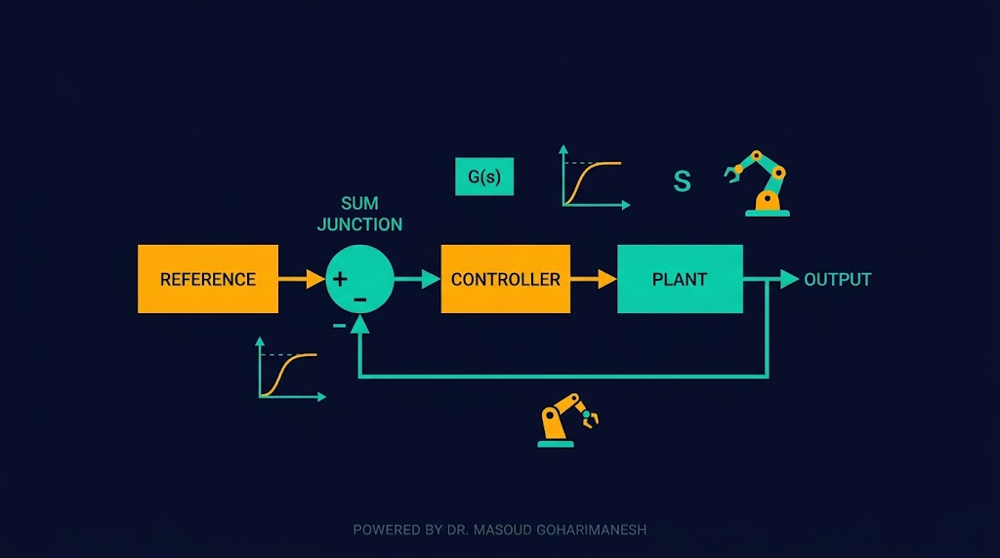
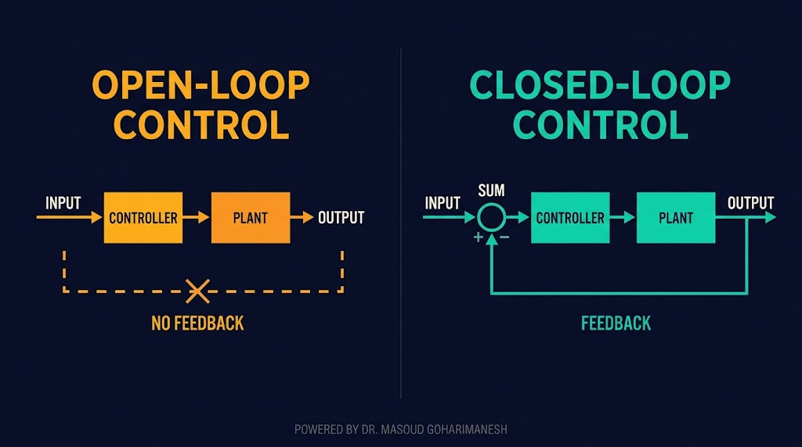
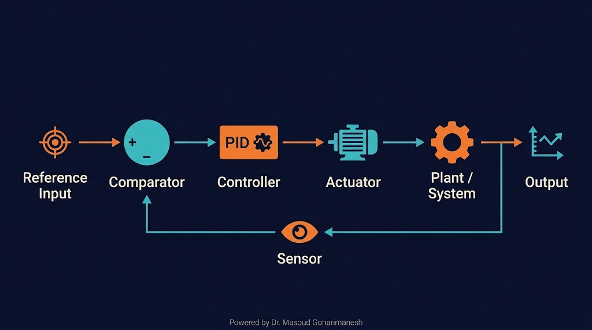
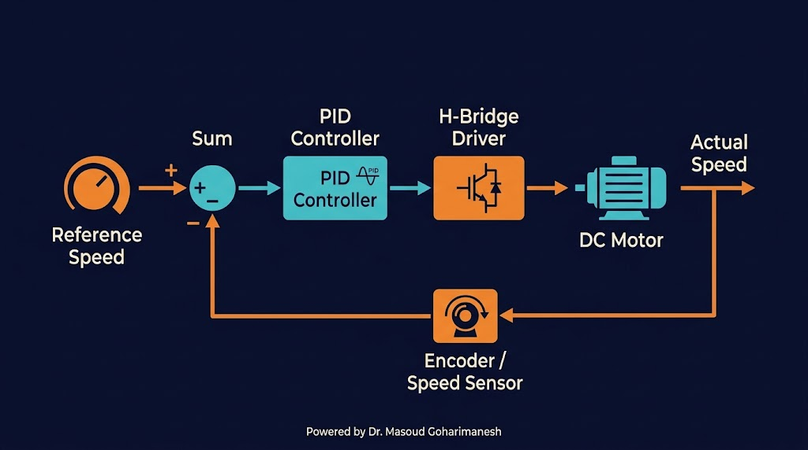
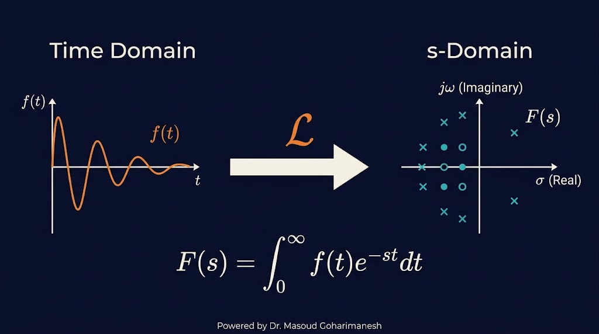
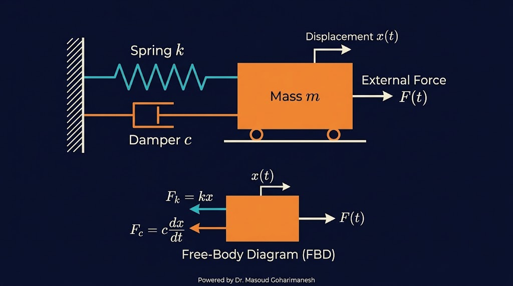
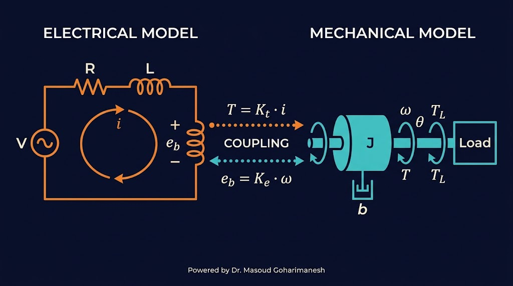
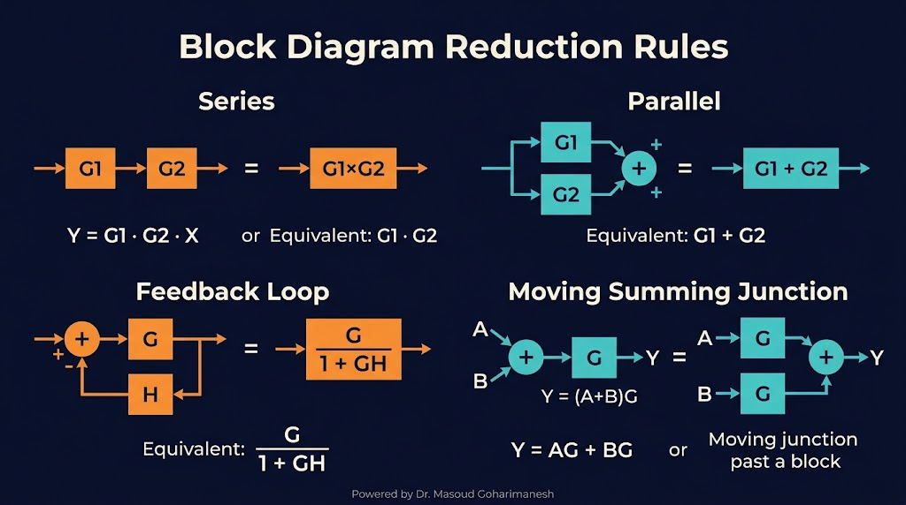

بازخورد، مدلسازی ریاضی، توابع تبدیل
دکتر مسعود گوهریمنش
دانشیار گروه مهندسی مکانیک
دانشگاه تربت حیدریه | پاییز ۱۴۰۵
بدون سیستم کنترل، یک ربات فقط یک سری قطعات بیجان است!
چگونه یک ربات میفهمد که به موقعیت هدف رسیده است یا نه؟ نقش «بازخورد» در این فرآیند چیست؟
از سیستمهای ساده تا پیچیده
رسیدن به مقدار مطلوب با دقت مشخص
حفظ عملکرد در برابر اغتشاشات خارجی
سرعت پاسخ، خطای کم، مصرف بهینه
تفاوت اساسی در وجود بازخورد

مثال: ماشین لباسشویی ساده، پمپ آب با تایمر
مثال: کنترل دمای کولر گازی، ربات مسیریاب
چهار جزء اصلی + سنسور

یک سیستم کنترل حلقهبسته واقعی

ابزار اصلی تحلیل سیستمهای کنترل

تبدیل لاپلاس، معادلات دیفرانسیل حوزه زمان را به معادلات جبری حوزه فرکانس (s) تبدیل میکند. این کار تحلیل و طراحی سیستمهای کنترل را بسیار سادهتر میکند.
قوانین کلیدی برای تحلیل
رابطه ورودی-خروجی در حوزه s
نسبت تبدیل لاپلاس خروجی به تبدیل لاپلاس ورودی، با فرض شرایط اولیه صفر. تابع تبدیل، شخصیت دینامیکی سیستم را نشان میدهد.
جرم-فنر-دمپر

m: جرم | c: ضریب دمپر | k: سفتی فنر | F: نیروی خارجی | x: جابجایی
مدار RLC
L: سلف | R: مقاومت | C: خازن | i: جریان
شباهت: L ↔ m | R ↔ c | 1/C ↔ k
سیستمهای مکانیکی و الکتریکی معادلات دیفرانسیل مشابهی دارند. این یعنی میتوان با مدار الکتریکی، یک سیستم مکانیکی را شبیهسازی کرد.
ترکیب الکتریکی و مکانیکی

سادهسازی سیستمهای پیچیده

پاسخ سیستم جرم-فنر-دمپر
پارامترها را تغییر دهید تا رفتار سیستم را ببینید.
جلسه هشتم - سیستمهای کنترل (بخش اول)
نکات کلیدی جلسه هشتم
جلسه بعد: سیستمهای کنترل (بخش دوم) — طراحی PID، پایداری
Powered by Dr. Masoud Goharimanesh